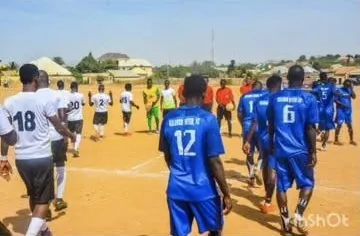
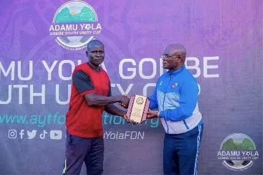
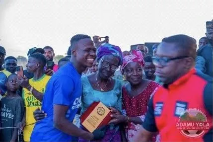
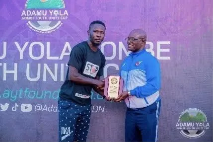

Photo & video gallery.
Education projects, support for widows, the Gombe Basketball City League and the faces and finals of the Gombe South Unity Cup. Tap any photo to view it larger.

Match day in Gombe South. Video, July 2024, watch on Instagram
Awards for the men behind the clubs. Video, January 2024, watch on Instagram
Families celebrate a Unity Cup award. Video, December 2023, watch on Instagram
Player recognition at the final. Video, December 2023, watch on InstagramHave photos from an AYF event?
Help us preserve the story. Share pictures, dates and names with our media team.